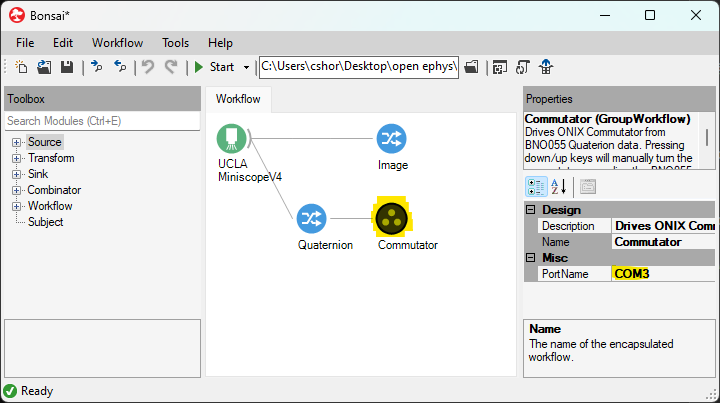

Automate Commutation with Bonsai and UCLA Miniscope v4#
This section outlines how to use Bonsai software to automate commutation of the tether between a miniscope mounted on a freely moving animal and a stationary DAQ.
Mount the commutator and establish all electrical connections according to the information found in the Mounting and Connecting section of this user guide
Download and configure Bonsai:
Download and Install Bonsai if you haven’t already
Open Bonsai and install the Bonsai.StarterPack and Bonsai.Miniscope packages if you haven’t already
Download, configure, and run the .bonsai file (also known as a workflow) for automating commutation using orientation data from the miniscope’s on-board IMU sensor:

 commutator-miniscopev4-automate.bonsai
commutator-miniscopev4-automate.bonsai
Configure the PortName property of the Commutator node to reflect the port to which the commutator is connected.
The process to determine to which port the commutator is connected depends on the operating system:
On Windows, open Device Manager and expand the Ports directory. The correct port is indicated by the Teensy USB Serial entry as seen as in the below example screenshot. In the example, the correct port is COM5

On Linux, run
ls /dev/tty*in the root directory and note the port name /dev/ttyUSB* with
Left-click the Commutator node (highlighted below) and modify the PortName property (highlighted below) to the value found in the previous step

Run the workflow in Bonsai
If all above steps are correctly performed, the commutator motor rotates when the miniscope rotates